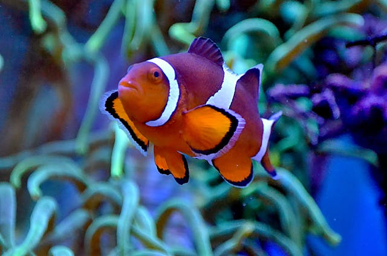

PEZ PAYASO
Los peces payaso, también conocidos como peces anémona, son pequeños peces marinos de colores vibrantes que habitan en los arrecifes de coral del Indo-Pacífico. Son conocidos por su estrecha relación simbiótica con las anémonas de mar, en las que encuentran refugio y protección de los depredadores.
Son sociales
Se alimentan de restos
Son pequeños


CARACTERISTICAS
Los peces payaso viven exclusivamente en los arrecifes de coral del Indo-Pacífico, donde encuentran refugio y alimento entre los corales y las anémonas. Algunas especies son más generalistas.
Los peces payaso son famosos por su estrecha relación con las anémonas de mar. Las anémonas tienen tentáculos urticantes que pueden picar a la mayoría de los animales, pero los peces payaso han desarrollado una capa de moco que les protege de las picaduras.